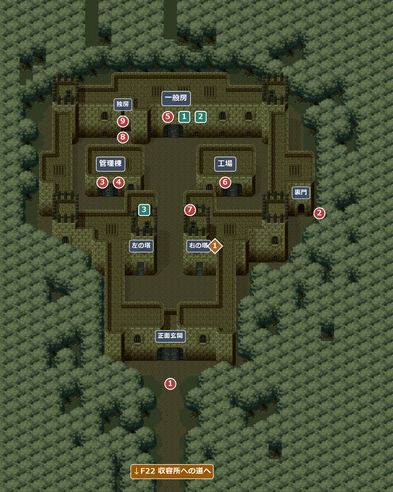
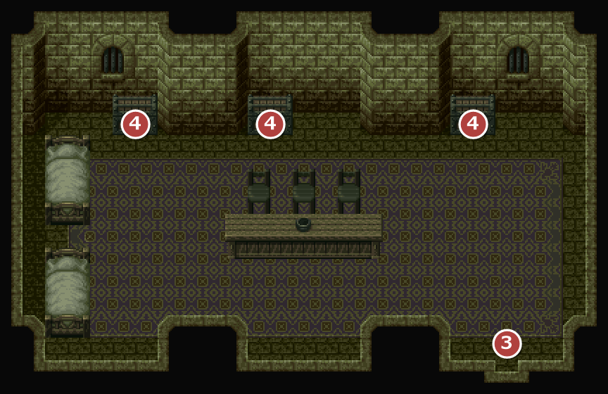
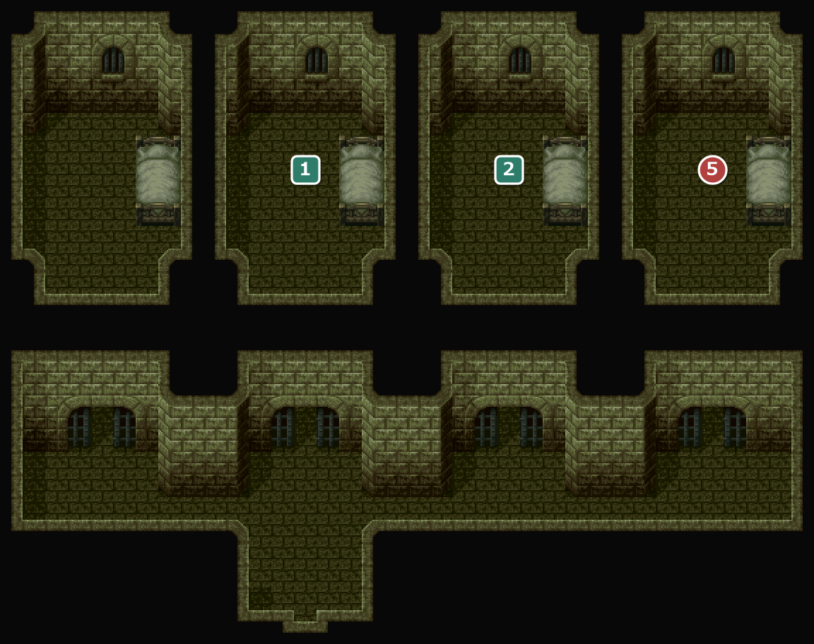
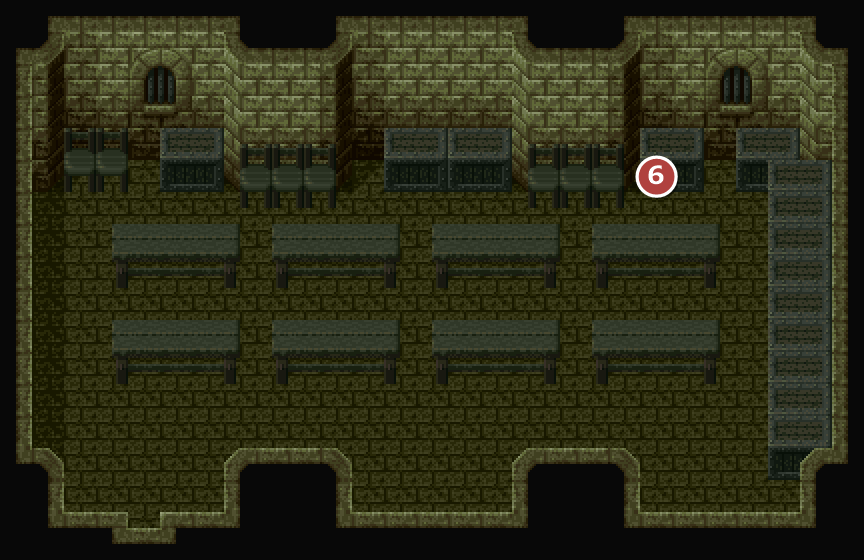
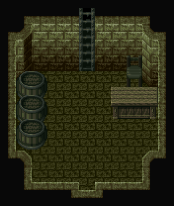
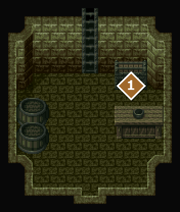
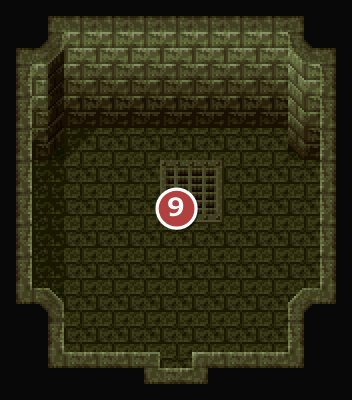

FIELD23
強制収容所
エンカウント率0% / 1.17%エスタンシアの町の北東に位置する収容所。ランパル王に逆らった町の人々が捕らえられている。反乱軍の陽動に合わせて裏から忍び込み、捕まっているライオネルを助け出す。
名前 建物・場所→ ほかの FIELD へ1メインイベント1サブイベント1宝箱・落ちている物

エンカウント
230123032304強制収容所：管理棟・強制収容所の塔の中
1歩ごとに 1.17%(平均 85.3 歩に1回)。戦闘になったときに出る組と、その確率:
| ID | 確率 | 前列 | 後列 |
|---|---|---|---|
| 57 | 44.4% | 衛兵 | 悪い囚人 |
| 58 | 44.4% | 衛兵×2 | 悪い囚人 |
| 59 | 11.1% | 悪い囚人×2 | 衛兵 |
！屋外ではエンカウントしない。敵が出るのは管理棟と塔の中だけ。
イベント
1
裏門はどこ？
場所: 正面玄関の前の道(X42-60 Y117 ほか)
正面玄関は閉まっている。アイリスと、ロウの言っていた裏門を探して壁沿いに奥へ進むことにする。
！裏門の前の衛兵に話しかけると、主人公が「おや？ 奥の木陰に人影が…」と気づく。
次へ収容所の右手の裏門の奥へ(②)。
2
茂みの男
場所: 裏門の奥の木陰(X96 Y65)
木陰に潜んでいた反乱軍の男と合流し、陽動を待つ。爆音で衛兵が気を取られた隙に、収容所の中へ忍び込む。
ここからライオネルを助けて外に出るまで、エスタンシアの町へは戻れず、セーブもできない。
次へ左の管理棟へ(③)。
3
管理棟の衛兵戦闘
場所: 管理棟(部屋2301)の入口(X46 Y33-35)
管理棟に入ると、すぐに衛兵に見つかって戦闘になる。
戦闘衛兵×2(前列)
！この戦闘は逃げられる。
次へ管理棟の奥の宝箱へ(④)。
4
管理棟の鍵
場所: 管理棟(部屋2301)の宝箱3つ
宝箱から収容所の各所の鍵が手に入る。塔の鍵は2本で、左右の塔に1本ずつ使う。
入手 工場の鍵一般房の丸鍵塔の鍵×2
工場の鍵一般房の丸鍵塔の鍵×2
次へ一般房へ(⑤)。
5
ペイン
場所: 一般房(部屋2305)の右端の囚人(X64 Y19)
一般房の鍵を開けて、囚人たちを逃がす。反乱軍のペインから、ライオネルは脱走に失敗して地下房に入れられていること、その場所は工場のタリスじいが知っていることを聞く。ペインはエスタンシアの町の家に戻っていて、後で死戻の歌の楽譜をくれる。
次へ工場のタリスじいへ(⑥)。
6
タリスじい
場所: 工場(部屋2302)のタリス(X42 Y15)
ペインの話を聞いた後に話しかけると、隠し房の場所を教えてくれる。一般房の扉の左の、壁がへこんだ所。鍵は塔の監視人の1人が持っていて、「思いっきり押しこんで回さないと開かない」。
！ペインと会う前に話しかけると、セリフが違う。タリス「ライオネル…どの男のことだろうか？ 名前だけでは…わしも、だいぶもうろくしたしな」——アイリスが逃げるよう勧めても「わしはもう老いた…ここを脱出しても意味はない」と動かない。
次へ右の塔へ(⑦)。
7
塔の監視人戦闘
場所: 右の塔(部屋2304)を上った塔の上(X58 Y65)
塔の鍵で右の塔に入り、ハシゴを上ると監視人に見つかって戦闘になる。倒すと独房の角鍵が手に入る。塔の鍵があれば、ペインやタリスじいより先に来てもよい(順不同)。
戦闘監視人(前列)
入手独房の角鍵
次へ一般房の扉の左の壁へ(⑧)。
8
隠し房
場所: 一般房の扉の左の壁(X38 Y41)
タリスじいの話を聞いた後に調べると、壁に隠し扉が見つかる(聞く前は何も起きない)。独房の角鍵を使うと一度は開かないが、タリスじいの言葉を思い出して押しこんで回すと開く。
次へ独房のライオネルへ(⑨)。
9
ライオネル救出
場所: 独房(部屋2306)のライオネル(X12 Y17)
注意正面玄関から外に出ると、収容所の中へは二度と戻れない。炎の輪の歌の宝箱や、一般房のポンド・スマイスを逃がし忘れていないか確かめてから出ること。
ライオネル「遅かったな、やっと助けに来てくれたか！」——アイリスが、使命を手伝ってもらう条件で助けに来たと告げる。ライオネルは「堂々と正面玄関からご退場ってわけだ」と正面の扉を開け、ドラゴの店での再会を約束して先に出ていく。
！いったん外に出ると、正面玄関の前の道でアイリスに「もうこの収容所には用はないわ。戻りましょう」と押し戻され、収容所に近づけない(裏門へも回れない)。
次へ正面玄関から出て、収容所への道を通ってF20 エスタンシアの町へ。
サブイベント
1
ポンドを逃がす
場所: 一般房(部屋2305)のポンド(X28 Y19)
時限ライオネルを助けて正面玄関から外に出ると、収容所の中へは二度と戻れない。
話しかけると、店に遊びに来てくれと言って逃げていく。ここで逃がしておくと、エスタンシアの町のポンドの店でお礼(200GOLD)がもらえる。
バグ一般房の囚人は、ライオネルを助けた後に話しかけても、主人公が「ライオネルという男を探しているのだが」と尋ねる会話になる。
2
スマイスを逃がす
場所: 一般房(部屋2305)のスマイス(X46 Y19)
時限ライオネルを助けて正面玄関から外に出ると、収容所の中へは二度と戻れない。
「ケチな盗っ人」のスマイスは、これを機会にカタギになると言って逃げていく。ここで逃がしておくと、エスタンシアの町のスマイスの店で買い物ができるようになる。
バグ一般房の囚人は、ライオネルを助けた後に話しかけても、主人公が「ライオネルという男を探しているのだが」と尋ねる会話になる。
3
左の塔の衛兵戦闘
場所: 左の塔(部屋2303)を上った塔の上(X44 Y65)
塔の鍵で左の塔に入り、ハシゴを上ると衛兵に見つかって戦闘になる(1回だけ)。倒しても何も手に入らない。
戦闘衛兵(前列)
！この戦闘は逃げられる。
宝箱・落ちている物
1
宝箱
場所: 右の塔(部屋2304)の中(X16-18 Y13)
「箱を開けると、中には古い楽譜が入っていた。楽譜には、『炎の輪の歌』と、書かれてあった。」
入手 炎の輪の歌
炎の輪の歌
部屋
2301強制収容所：管理棟

元のマップは 40×20 マス。右約12マスの何もない部分を切って載せている。
3入ってすぐ衛兵×2 との戦闘 4鍵の入った宝箱が3つ
2305強制収容所：一般房

元のマップは 40×30 マス。右約3マスの何もない部分を切って載せている。
5ペイン(右端) 1ポンド 2スマイス。左端の男も話すと逃げていく。どの囚人も話すと1回で姿を消す。
2302強制収容所：工場

元のマップは 40×20 マス。右約12マスの何もない部分を切って載せている。
6タリスじい
23032304強制収容所の塔の中


23032304元のマップは 20×15 マス。右約8マスの何もない部分を切って載せている。
2303左の塔。ハシゴを上ると塔の上に出る(3)。
2304右の塔。ハシゴを上ると塔の上に出る(7)。 1炎の輪の歌
2306強制収容所：独房

元のマップは 20×15 マス。右約8マスの何もない部分を切って載せている。
9ライオネル